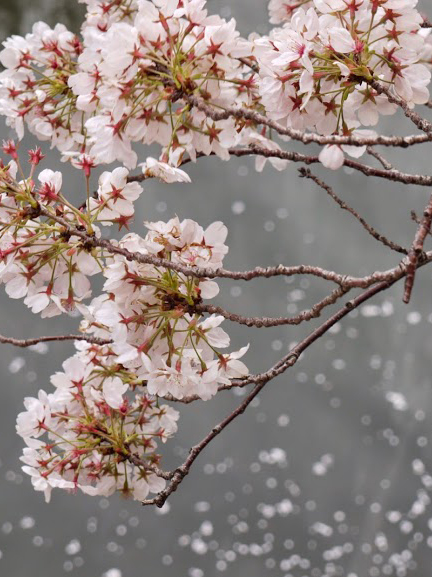

目黒川 四季→春 エリア→東京南部

このスポットには
目黒川沿いには多くの桜の木が有り、3月下旬から4月上旬には見事な桜と川のハーモニーを楽しむことが出来ます。また、地元商店街などが桜にちなんだイベントを開催します。約4キロメートルの川沿いの両岸に、約800本の桜（大部分がソメイヨシノ）が咲き競います。（http://www.city.meguro.tokyo.jp/gyosei/shokai_rekishi/event/sakura.htmlより抜粋）
このスポットには
こんな歴史が・・・
目黒川は鎌倉時代以降農地の灌漑用水として利用され、多くの武士の管理下に置かれていた。享保年間、「目黒不動尊」付近の目黒川には木食上人により「太鼓橋」と呼ばれる橋が架けられ、参拝のルートとして多くの人々が行き交うようになる。この目黒川と「太鼓橋」の風景は歌川広重の浮世絵にも描かれている。大正時代から改修工事が始まり水車に代わって目黒川沿いに登場したのが桜並木。関東大震災を境に現在の形態へ変化。
所在地
世田谷区、目黒区、品川区
最寄り駅
東急東横線・東京メトロ中目黒駅下車、徒歩1分 JR・東急目黒線目黒駅下車、徒歩6分